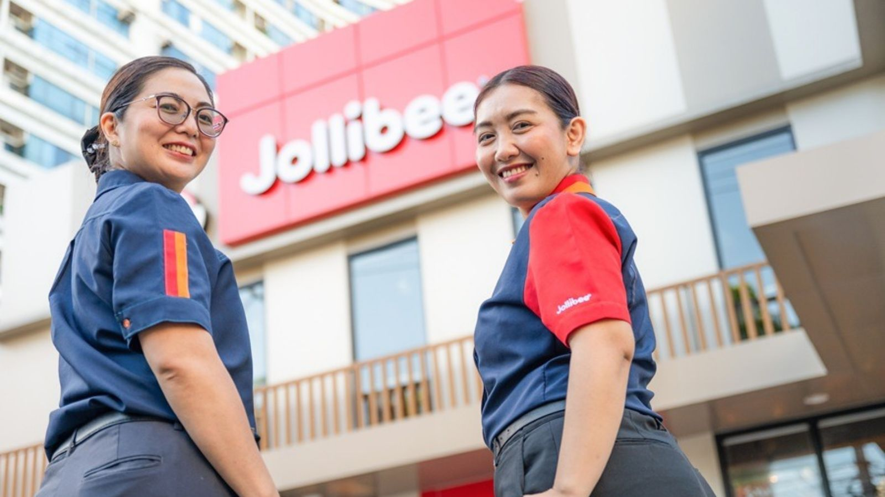

Jollibee Group targets provincial markets with 1,500-area expansion pipeline
2 Nov 2026 · Marketing-Interactive
Jollibee Group Philippines has identified more than 1,500 potential trade areas for 2027–2030 across Jollibee, Mang Inasal and Chowking, with 71% of those sites outside Metro Manila. The three brands make nearly 90% of the Philippine systemwide sales (Jollibee alone about 62%). The group already runs more than 3,500 Philippine stores as of 1H26, after two years of 10% systemwide sales growth. CEO Joseph Tanbuntiong framed the plan as aggressive but disciplined, gated by site viability and returns. Mang Inasal president Mike Castro said drive-thru is a key format: the brand’s first opened in Sta. Maria, Bulacan in December 2025, and by 1H26 eight drive-thrus were posting average daily sales about 40% higher than other Mang Inasal stores. Chowking’s brief is everyday Chinese-style occasions in more communities. The 1,500 figure is a pipeline of opportunities, not a store-opening commitment.
Operator read: this is where the next QSR fight lands—outside NCR, on drive-thru pads and flexible formats, not another Makati corner. For a Calamba–Laguna–Cavite opener, treat every provincial highway and town plaza site as contested: Jollibee will bid on the same traffic counts you are counting. The Mang Inasal drive-thru lift is the actionable number—40% higher ADS means the format, not just the brand, is carrying growth. If your concept can run a window or a smaller box with delivery, price that against mall rent before you sign. Also watch protein lanes: more Jollibee, Inasal and Chowking stores means more demand for chicken, pork BBQ cuts and rice in the same catchments you buy from.